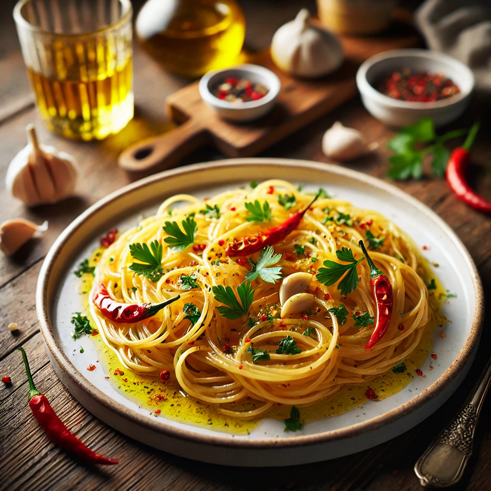

Spaghetti Aglio e Olio Recipe

Description
Spaghetti Aglio e Olio is a classic Italian pasta dish celebrated for its simplicity and bold flavors. Made with just a few ingredients—garlic, olive oil, red chili flakes, and parsley—it offers a delightful balance of spiciness and richness. The al dente spaghetti is tossed in the flavorful garlic-infused oil, creating a comforting, quick, and delicious meal that’s perfect for any occasion.
Ingredients (Serves 2)
- 200g spaghetti
- 3 garlic cloves, thinly sliced
- 4 tablespoons olive oil
- 1 teaspoon red chili flakes (optional)
- Salt (to taste)
Steps
- Cook the spaghetti in salted boiling water until al dente (about 10 minutes). Reserve 1/4 cup of pasta water before draining.
- Heat olive oil in a large pan over medium heat. Add sliced garlic and chili flakes (if using), and sauté until the garlic is golden (not burnt).
- Add the drained spaghetti and reserved pasta water to the pan. Toss to coat evenly in the garlic oil.
- Season with salt and sprinkle parsley on top (if using). Serve hot.
Home